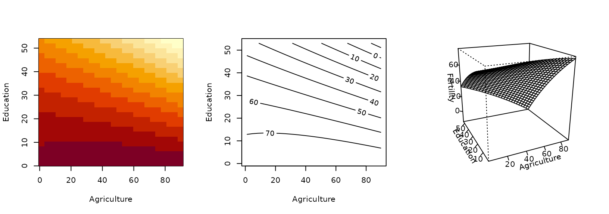
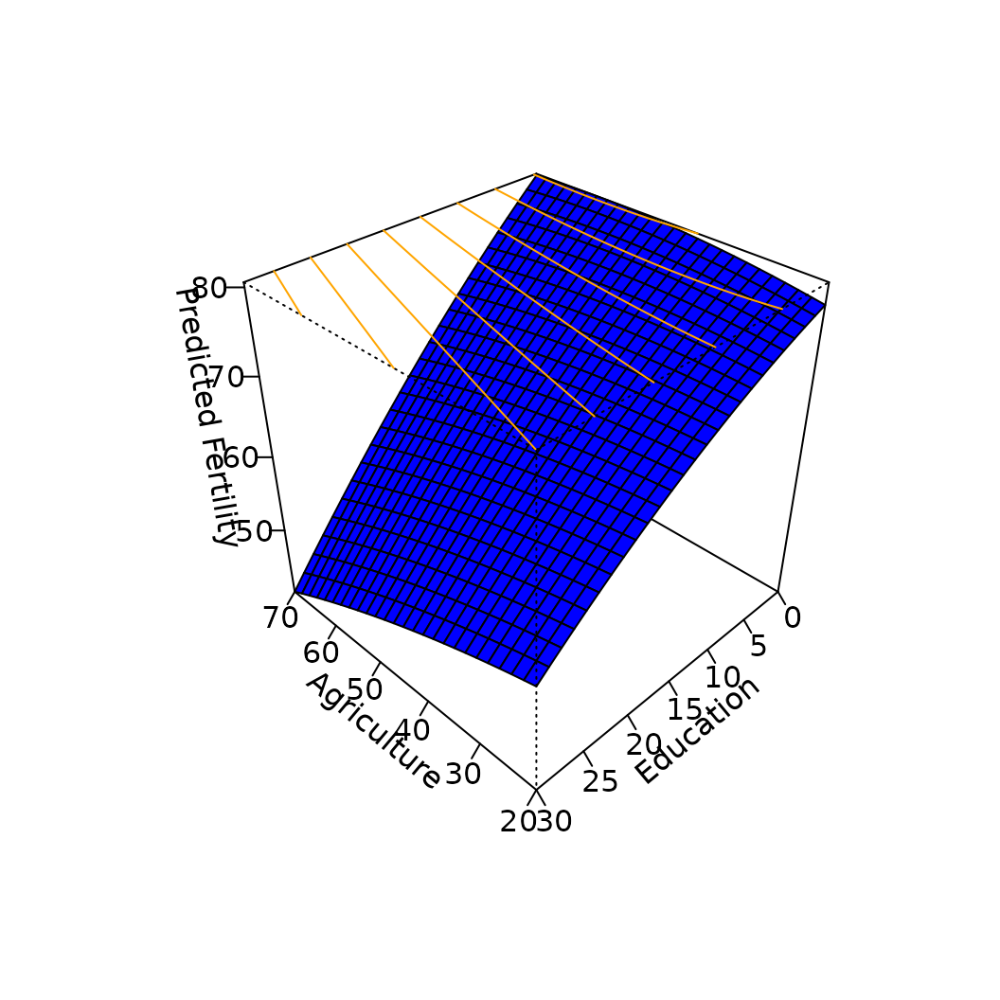
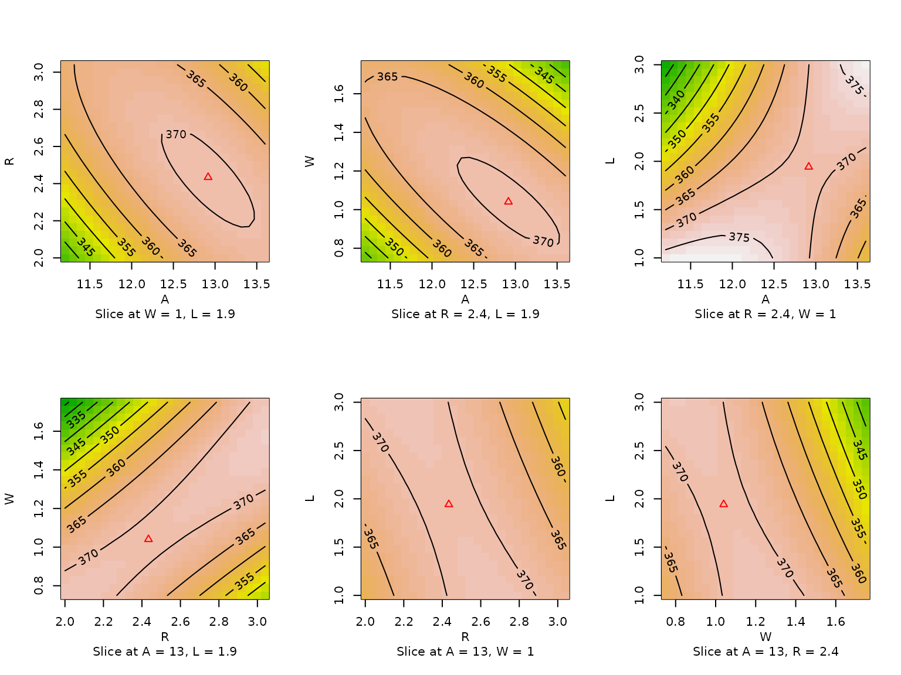
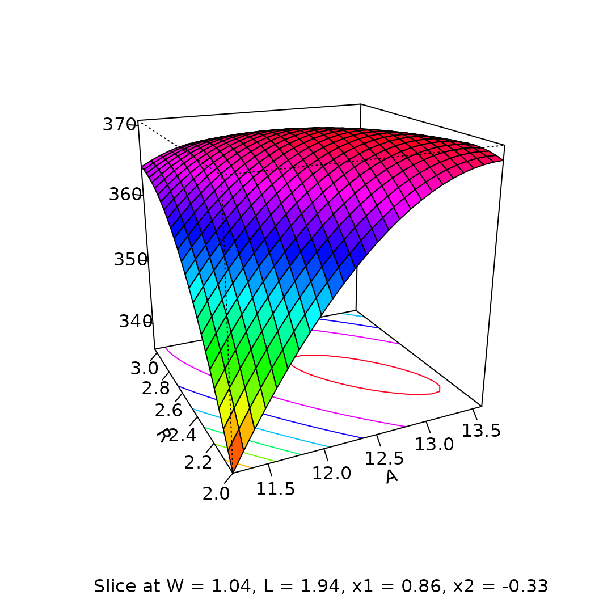
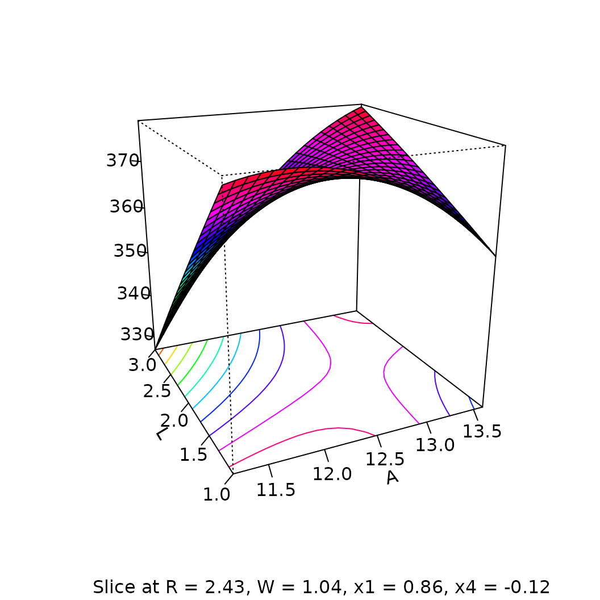

Abstract
This is a companion to the main vignette for the rsm
package, providing more details on how to use the contour,
image, and persp to visualize fitted response
surfaces. While designed with rsm objects in mind, these
methods work with any lm object and thus provide a quick
way to graph a fitted surface. Enhancements include coloring, adding
contour lines to perspective plots, and hooks that provide additional
annotations.
Introduction
When a regression model is fitted using two or more continuous
predictors, it is useful to present a graphical visualization of the
fitted surface.
To this end, the functions contour.lm,
persp.lm and image.lm were developed and
incorporated in the rsm package, inasmuch as surface
visualization is especially important when using response-surface
methods. The three functions are S3 methods for objects of class
lm, or classes (such as rsm) that inherit from
lm.
This vignette is not meant to document the functions; please refer to the help pages for details. Our goal here is to illustrate their use.
Models with two predictors
Consider an example using the ubiquitous swiss dataset
that is standard in R. Let us fit a model for Fertility as
a polynomial function of Agriculture and
Education:
The following basic calls illustrate the default results from the three functions.
library(rsm)
par(mfrow=c(1,3))
image(swiss2.lm, Education ~ Agriculture)
contour(swiss2.lm, Education ~ Agriculture)
persp(swiss2.lm, Education ~ Agriculture, zlab = "Fertility")
Note that we use a formula in the second argument to specify which
variable goes on which axis. The persp plot uses a
different viewpoint, distance, and tick type than the default; I feel
that these new defaults are better for viewing response surfaces.
Generally, perspective plots are best not displayed in too small a space. It also helps to enhance them with shading, colors, or contour lines. The following call illustrates how to create an enhanced version of the perspective plot with a different point of view, shading, a different surface color, and contour lines added to the top surface of the box. We also restrict the predictor values to narrower ranges.
persp(swiss2.lm, Education ~ Agriculture, col = "blue",
bounds = list(Agriculture=c(20,70), Education=c(0,30)),
zlab = "Predicted Fertility",
contours = list(z="top", col="orange", shade = 1),
theta = -135, phi = 35)
Three or more predictors
When a regression model has more than two continuous predictors, some additional issues arise:
- We can use only two predictors at a time in an image, contour, or surface plot.
- For two given predictors, the surface plot will change depending on
the values of the other predictors. (The defaults for
image,contour, andperspis to use the average, but this can be changed.) - There will be more than one surface plot; it is desirable to keep the scaling and coloring consistent among all these plots. (This happens automatically in all three functions; there is no way to defeat it other than by manually plotting the retrieved surface data.)
For illustration, we will use the data from a paper-helicopter
experiment described in Box *et al. (2005), page 499, and provided in
the rsm package as the dataset heli. The
variables are coded variables \(x_1\)–\(x_4\), which are, respectively, linear
functions of wing area \(A\), wing
length ratio \(R\), body width \(W\), and body length \(L\). the experiment was run in two blocks,
and the response variable is ave, the average flight time
in seconds. This dataset is analyzed in more detail in the . A
second-order response-surface model for these data is obtained using
An rsm object is an extension of a lm
object with extra response-surface-related information included. To
obtain contour plots with each of the 6 possible pairs of the variables
\(x_1\)–\(x_4\), simply specify the formula
~ x1 + x2 + x3 + x4 in the call to
contour:
The heli dataset is an extension of data.frame
that contains the coding information, and this information is retained
in heli.rsm. When such coding is present, then by default,
the coding formulas are used to decode the axis values \(x_1,x_2,x_3,x_4\) to their original values
\(A,R,W,L\).
Also, when variables other than those on the coordinate axes are involved, then what is displayed is a slice of the response surface, holding the other variables fixed at certain values. By default, we use the averages of numeric predictors, and the first levels of factors. This information is incorporated as part of the \(x\)-axis label in each contour plot. In this example, we are probably more interested in the behavior of the response surface in a neighborhood of the stationary point (where the gradient is zero). We show how to do this after a little bit more discussion in the next section.
Annotations and hooks
Suppose in the helicopter example, we want to add some annotations to
the plots. Since there are several plots, we don’t want to do this
manually. The contour method for lm objects
(as well as image and persp) allow one to
specify a hook argument to take care of things like that.
The hook should be a list containing function definitions
for one or both of pre.plot and post.plot.
Obviously, these are functions that are run just before, and just after,
each plot is constructed. Each function is passed one argument, a
character vector of length \(4\);
elements \(1\) and~2 are the labels for
the horizontal and vertical axes; elements \(3\) and~\(4\) are the corresponding variable names;
and element 5 is a label describing the slice being plotted.
In the following code, we set up a post.plot hook to
plot the position of the stationary point in each graph.
xs <- canonical(heli.rsm)$xs # stat.pt. in coded units
SP <- code2val(xs, codings(heli.rsm)) # in decoded units
myhook <- list()
myhook$post.plot <- function(lab) {
idx <- sapply(lab[3:4], grep, names(xs))
points (SP[idx[1]], SP[idx[2]], pch = 2, col = "red")
}The coding is a bit tedious due to the need to match elements of
xs with the variable names. And it gets trickier because
contour is smart enough to decode the coordinates into
original units, but it doesn’t do any decoding with any
hook functions; that is left to the user.
To create an enhanced contour plot, use the at argument
to specify that we want the plots sliced at the stationary point instead
of the origin, the image argument to enhance the plots with
a background color image, and use hook to incorporate the
above hook function.
 Centering at the stationary point gives an entirely different view of the fitted surface than is seen in the previous figure.
Saving graphs
Sometimes we may want to access individual plots in a multi-panel frame. For PS and PDF, this is easy to handle. For example, consider this code:
pdf(file = "heli-cps.pdf")
contour (heli.rsm, ~ x1 + x2 + x3 + x4, image = TRUE, at = xs, hook = myhook)
dev.off()The resulting file will have six pages, one per graph. We can then import, say, the fourth graph into a pdflatex source file using a command like
\includegraphics[width=.75\linewidth, page=4]{heli-cps.pdf}For other formats, we can use hooks to create separate files based on
variable names. For example,
{r}{eval=FALSE} png.hook <- list() png.hook$pre.plot <- function(lab) png(file = paste(lab[3], lab[4], `.png`, sep = ``)) png.hook$post.plot = function(lab) dev.off() contour (heli.rsm, ~ x1 + x2 + x3 + x4, image = TRUE, at = xs, hook = png.hook)
More on perspective plots
The lm method for persp handles its
col argument differently than the default
persp function. For other than a single color, it
determines surface-facet colors based on the fitted response value (like
is done in image) rather than requiring a matrix of facet
colors.
Adding contours
To add contour lines to a perspective plot, use the
contours argument. It may be a boolean value, character
value, or a list. With contours=TRUE or equivalently, ,
contour lines are drawn on the bottom surface of the box using the
default foreground color. With contours="top", they are
drawn at the top. Bottom contours are drawn before the surface is drawn
(so they may become partially obscured), and top contours are drawn
afterward. A value of contours="colors" will draw the
contours on the bottom, using the same colors as the corresponding
contour levels on the surface (as illustrated in the prespective plot).
Any other character value of contours will be taken as a
color name for the contours, e.g., contours="green". For
more control, contours can be a list containing any or all
of col (which may be either "colors" or a
valid color), “z” (which may be "top",
"bottom", or a numeric \(z\) value), and "lwd" (to
control the width of the lines).
\begin{figure}


Doing it your own way
If these functions do not produce exactly the plot you want, you may
still be able to save yourself a lot of work by calling
contour with the desired object and formula(s), and
plot.it=FALSE. The returned object is a list of data for
each plot—the \(x\) and \(y\) values, the \(z\) matrix, the range of \(z\) across all plots, and axis labels.